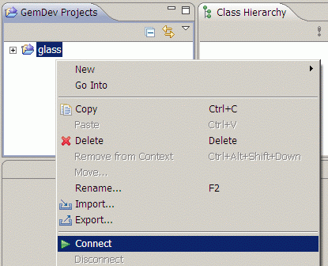
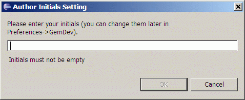

Connecting to Database
After you installed GemStone and started Broker Server and Created GemDev Project you can connect with Eclipse to database.
Select GemDev project you want to connect to database and in context menu choose Connect action
(menu item Disconnect disconnects connected projects from database)

In case you connect first time to GemStone Eclipse will ask for you
initials (initials are used by GemStone for method timestamps)

Finally Eclipse will ask broker server for GemStone sessions it can use
and caches essential information about database (this can take longer
time in case you are connecting big database and/or you have slow network connection)